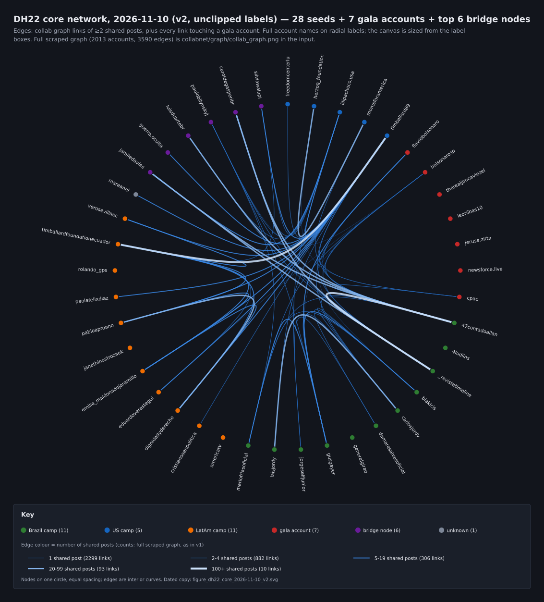

The Dark Horse Collaboration on Instagram
timballard89, the Bolsonaro camp and a film: what the post headers show · Nov 11, 2026 · unlisted
1. The film
Dark Horse is a 2026 biographical film about Jair Bolsonaro's 2018 campaign and the stabbing attack. Cyrus Nowrasteh directed it from a story by Brazilian congressman Mário Frias, and Jim Caviezel plays Bolsonaro. The production is headed by Eduardo Verástegui, known for producing Sound of Freedom, the film about timballard89's owner, Tim Ballard. In May 2026, the press reported that Senator Flávio Bolsonaro had sought funding for the film from banker Daniel Vorcaro, and that at least R$61 million was allegedly transferred between February and May 2025. Flávio Bolsonaro denies wrongdoing. The production company and Frias deny that Vorcaro's money reached the production. The film's Brazilian release has been put back to 2027.
Context from the press, not from our data (links as cited in Wikipedia's article on the film): The Guardian, Dec 8, 2025 · Folha de S. Paulo, Dec 7, 2025 · Metrópoles, May 13, 2026 · AP, May 13, 2026 · Reuters, May 15, 2026 · Correio do Estado, May 13, 2026 (denials) · Estadão (release).
2. Two months on timballard89's grid
From May 1 to June 30, 2025, timballard89 shared 22 co-posts with 27 other accounts. 11 of them are hybrids. Before May 20 there is one co-post. Then six hybrids land in 23 h 39 min (May 20 15:07 – May 21 14:46 UTC), from @biakicis, @damaresalvesoficial, @generalgirao, @mariofriasoficial (the film's story writer), @damaresalvesoficial again, and @carlosjordy. On June 10, timballard89 posts with @eduardoverastegui, who heads the film's production.
3. Two date ranges, side by side
| when | what | source |
|---|---|---|
| Feb – May 2025 | R$61 million or more allegedly moved toward the film (reported; denied) | press, May 2026 |
| May 20 – 26, 2025 | 8 hybrids in a row on timballard89's co-posts, 6 of them in 23 h 39 min | post headers (our capture) |
| Jun 10, 2025 | timballard89 co-posts with @eduardoverastegui | post header |
The posts say nothing about money. We put the dates next to each other and make no claim beyond that.
4. Who is on the 22
Of the 27 accounts, 11 are in the Brazil camp, 4 in the US camp and 11 in Latin America outside Brazil, and 1 not coded (camps as coded in Opie's 11-07 network report).
| post | posted (UTC) | link | owner | collaborators |
|---|---|---|---|---|
| B1 | 2025-05-05 17:22 | DJR7KHxuGxN | @freedomcenterlu | @timballard89 |
| B2 | 2025-05-20 15:07 | DJ4TzwXORlX | @biakicis | @lilipacheco.usa, @mareannl, @timballard89 |
| B3 | 2025-05-20 17:07 | DJ4hiIERkzm | @damaresalvesoficial | @timballard89 |
| B4 | 2025-05-21 01:25 | DJ5acx7tA-S | @generalgirao | @timballard89 |
| B5 | 2025-05-21 02:01 | DJ5eonNtUtD | @mariofriasoficial | @timballard89 |
| B6 | 2025-05-21 13:52 | DJ6v1zZzlEo | @damaresalvesoficial | @timballard89 |
| B7 | 2025-05-21 14:46 | DJ62K4HxnKA | @carlosjordy | @timballard89 |
| B8 | 2025-05-25 12:46 | DKE7qkmREvn | @damaresalvesoficial | @timballard89 |
| B9 | 2025-05-26 20:29 | DKITvOQBQza | @timballard89 | @damaresalvesoficial, @gusgayer, @jorgeseifjunior, @lilipacheco.usa |
| B10 | 2025-05-29 04:35 | DKOWlenNqQ8 | @lilipacheco.usa | @timballard89 |
| B11 | 2025-05-30 18:21 | DKSZ5T6iU3E | @americatv | @rolando_gps, @timballard89 |
| B12 | 2025-06-02 01:19 | DKYTBMSuTjl | @cristianosenpolitica | @timballard89 |
| B13 | 2025-06-07 04:37 | DKlh6ilN0s2 | @paolafelixdiaz | @timballard89 |
| B14 | 2025-06-10 14:23 | DKuTZfwxa_I | @timballard89 | @eduardoverastegui |
| B15 | 2025-06-18 15:46 | DLDDG9jTwv3 | @damaresalvesoficial | @timballard89 |
| B16 | 2025-06-19 19:03 | DLF-XqGxPQG | @timballard89 | @janethinostrozaok |
| B17 | 2025-06-19 19:09 | DLF_FwFS6Fb | @momsforamerica | @herzog_foundation, @timballard89 |
| B18 | 2025-06-24 21:56 | DLTKIerPzBY | @verosevillaec | @timballard89 |
| B19 | 2025-06-28 02:17 | DLbWW_XuMGB | @carlosjordy | @laisjordy, @timballard89 |
| B20 | 2025-06-29 18:20 | DLfpqobvgiT | @4ludlins | @timballard89 |
| B21 | 2025-06-29 21:42 | DLgAz2ZTX9Q | @47contadoallan | @_revistatimeline, @timballard89 |
| B22 | 2025-06-30 23:19 | DLivtAEPizQ | @dignidadyderecho | @emilia_maldonadojaramillo, @pabloaproano, @timballard89, @timballardfoundationecuador |
5. The wider network
We then walked out from those 28 accounts: every account they co-posted with, in their held timelines (scrape of Nov 5–6, 2026). That covers 28 seeds and 35,382 held posts, which give 2,013 accounts and 3,590 links. timballard89 is the biggest hub: 317 partners and 1,521 shared-post links, reaching Brazil, the US and the rest of Latin America. The Brazil side reaches the US through a small set of accounts:
| account | kind | shared posts with Brazil camp | with US camp |
|---|---|---|---|
| @jamiledavies | found (not a seed) | 69 | 14 |
| @guerra.oculta | found (not a seed) | 4 | 9 |
| @luisduartebr | found (not a seed) | 26 | 3 |
| @paulobilynskyj | found (not a seed) | 11 | 3 |
| @caroldegasperibr | found (not a seed) | 72 | 2 |
| @silviawaiapi | found (not a seed) | 2 | 20 |

Opie's core drawing (v2, 11-10; same graph as 11-07, labels unclipped): the key sits outside the drawing, and edges are coloured by bands of shared posts. Full table in his report.
6. After the two months
timballard89's own grid, as held, runs Oct 1, 2025 – Nov 6, 2026: 1,846 posts, 865 of them co-posts. Of the seven Brazilian politicians who appeared on the 22, none appears on any of these 865 co-posts. @laisjordy appears 2 times. @eduardoverastegui appears 4 times (2025-12-05, 2026-04-19, 2026-04-20, 2026-07-01). July – September 2025 is not on the held grid, so for those months we can't say.
| timballard89's partners, Oct 2025 – Nov 2026 | co-posts |
|---|---|
| @tbfrescue | 302 |
| @timballardfoundationecuador | 280 |
| @hiddenwarmovie | 50 |
| @druze.spirit | 37 |
| @druze_nexus | 24 |
| @expofamily.cl | 20 |
| @freechildhoodec | 19 |
| @brasilparalelo | 18 |
| @spanglishmoviesofficial | 14 |
| @beingkylecampbell | 13 |
| @politicallybasic | 13 |
| @latterdaychad | 12 |
His co-posts by month, on the same held grid:
Why only his own grid: in the other accounts' held timelines, Instagram served some of these same posts without timballard89 in the header (B1, B9 and B21 among them), so counting from those timelines would undercount him. Coverage also varies: 17 of the 28 held timelines reach back to May 2025 (table in section 9).
7. November 2026: the Mar-a-Lago gala
On Nov 5, 2026, CPAC held its gala at Mar-a-Lago, attended by Flávio and Eduardo Bolsonaro and by Jim Caviezel, the film's lead. Of the Dark Horse accounts, @47contadoallan posted from the evening:
| time (ET) | post | account | caption (opening, as posted) |
|---|---|---|---|
| 2026-11-05 07:00 | DfW0ia6h0mg | 47contadoallan,_revistatimeline | SE VOCÊ ACHA QUE FLÁVIO BOLSONARO PERDEU AS ELEIÇÕES, VOCÊ É MALUCO! 🎙️Trecho do programa Conversa Timeline, que vai ao ar de segunda a sex… |
| 2026-11-05 16:00 | DfX8cNWBtiT | 47contadoallan,_revistatimeline | NÃO EXISTE DIREITA NO BRASIL, EXISTE JAIR MESSIAS BOLSONARO |
| 2026-11-05 21:12 | DfYf8zCIbuM | 47contadoallan | 🚨 BREAKING: 🇧🇷 Brazilian Opposition Leader Favio Bolsonaro arrives at Mar-a-Lago 🇺🇸 When he arrives he was welcomed by @cpac and @latinowal… |
| 2026-11-05 21:31 | DfYiYbKy0KE | 47contadoallan | Estou no jantar de gala organizado pelo CPAC de @mschlapp, testemunhando os americanos ovacionando @FlavioBolsonaro e @bolsonarosp na casa d… |
| 2026-11-05 22:19 | DfYn7F-tI4x | 47contadoallan | Endereço de Mar-A-Lago está Google. 👍🏻 |
@47contadoallan is also a collaborator, alongside @cpac, on two gala posts that credit @flaviobolsonaro and @bolsonarosp (Dfa5lJZmzsq, owner @gabywallstreet; Dfa-AIJiMLg, owner @tonydelgado). That account was on the 22 (B21, Jun 29, 2025). The widely shared image of Flávio Bolsonaro meeting Caviezel, credited "Foto: Instagram", matches a crop of a frame from a vertical video @BolsonaroSP posted on X at 8:21 pm ET. This comes from a fingerprint search of 77 Instagram posts and 11 X posts; the image is in none of the Instagram posts. The visual check is pending.
8. What the posts show, and what they don't
They show which accounts Instagram credits together, who owns each post, and when it went up. They don't show who wrote a caption, who pressed "post", who paid for anything, or why. "Dark Horse" is our label for these accounts and dates. It isn't written on the posts.
9. Check it yourself
Open any post linked above and read its header. Coverage of each held timeline:
| account | camp | held from | held to | posts |
|---|---|---|---|---|
| @verosevillaec | LAT | 2014-01-03 | 2026-08-14 | 906 |
| @paolafelixdiaz | LAT | 2014-02-14 | 2026-10-17 | 1,800 |
| @lilipacheco.usa | US | 2017-03-19 | 2026-10-02 | 1,799 |
| @rolando_gps | LAT | 2018-10-05 | 2026-08-03 | 276 |
| @timballardfoundationecuador | LAT | 2020-05-27 | 2026-10-17 | 487 |
| @laisjordy | BR | 2020-06-11 | 2026-10-30 | 1,135 |
| @janethinostrozaok | LAT | 2020-06-30 | 2026-10-16 | 1,567 |
| @herzog_foundation | US | 2021-05-26 | 2026-10-20 | 1,149 |
| @pabloaproano | LAT | 2022-09-06 | 2026-10-12 | 54 |
| @freedomcenterlu | US | 2022-12-13 | 2026-11-05 | 1,800 |
| @dignidadyderecho | LAT | 2023-09-13 | 2026-10-15 | 229 |
| @emilia_maldonadojaramillo | LAT | 2023-10-06 | 2026-10-06 | 432 |
| @cristianosenpolitica | LAT | 2024-01-23 | 2026-11-05 | 1,464 |
| @4ludlins | BR | 2024-01-27 | 2026-11-05 | 554 |
| @momsforamerica | US | 2024-02-10 | 2026-11-03 | 1,800 |
| @gusgayer | BR | 2025-01-23 | 2026-11-04 | 1,800 |
| @47contadoallan | BR | 2025-02-21 | 2026-11-06 | 1,800 |
| @jorgeseifjunior | BR | 2025-06-16 | 2026-10-31 | 1,800 |
| @carlosjordy | BR | 2025-07-23 | 2026-11-06 | 1,812 |
| @generalgirao | BR | 2025-08-15 | 2026-10-22 | 1,788 |
| @timballard89 | US | 2025-10-01 | 2026-11-06 | 1,846 |
| @damaresalvesoficial | BR | 2025-10-25 | 2026-11-06 | 1,812 |
| @mariofriasoficial | BR | 2025-10-30 | 2026-11-05 | 1,800 |
| @biakicis | BR | 2025-12-14 | 2026-11-06 | 1,812 |
| @_revistatimeline | BR | 2026-06-04 | 2026-11-05 | 1,812 |
| @eduardoverastegui | LAT | 2026-06-06 | 2026-10-27 | 60 |
| @americatv | LAT | 2026-09-28 | 2026-11-06 | 1,788 |
| @mareannl | UNK | — | — | 0 (empty) |
Inputs (sha256, first 12): posts.csv 2d163c9d2d3b · hybrid_accounts.csv bd71701f5f17 · timballard89 timeline 5f4ab29f0d78 · Opie analysis.json 9ce14be32b9c. Built by build_article.py 0c745f3f1197, 2026-11-10 22:06 PST. Numbers recounted independently by Opie from the raw inputs, Nov 10, 2026: match. The section-6 data and script, with a README on checking it without our files: data/dark-horse-on-instagram/.